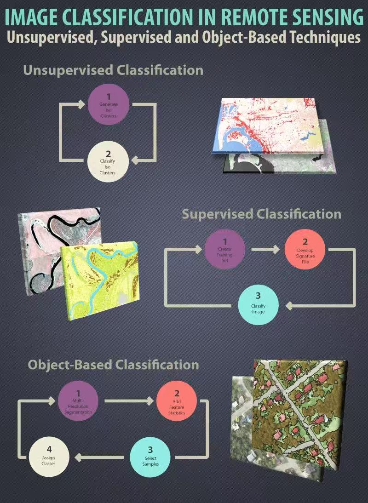
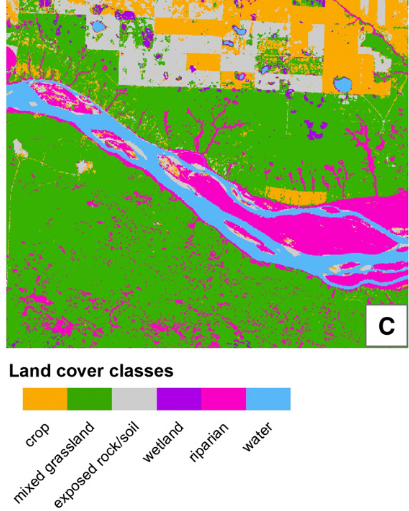
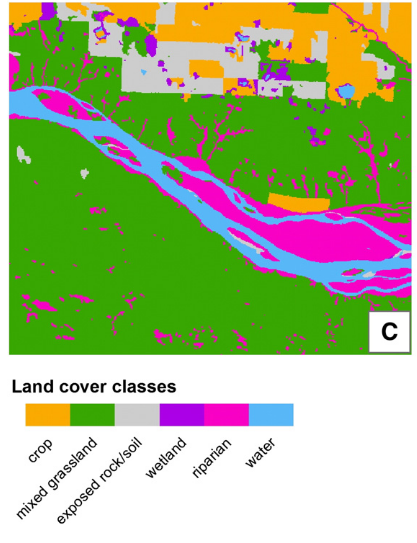
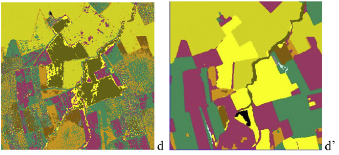

| Criteria | Object-Based Image Analysis (OBIA) | Sub-pixel Analysis |
|---|---|---|
| Basic Unit | Object (multiple pixels) | Mixed pixel (one pixel contains multiple land cover types) |
| Resolution | High-resolution (UAV, WorldView) | Low to medium resolution (MODIS, Landsat) |
| Classification | Machine learning (SVM, Decision Tree, KNN, Random Forest) | Spectral unmixing (LSU, MESMA, V-I-S model) |
| Features Used | Spectral, spatial, shape-related (length-width ratio, edge length, compactness) | Spectral only |
| Main Methods | Segmentation: SLIC, Watershed, Multi-resolution Segmentation | Unmixing: Linear Spectral Unmixing (LSU), MESMA |
| Model | Classification: SVM, Random Forest, Decision Tree, KNN | Land Cover Fractions: V-I-S model |
| Applications | Urban classification, land cover mapping | Mixed land cover analysis, vegetation fraction estimation |
| Complexity | High (segmentation + classification) | Low (spectral analysis only) |
| Advantages | High accuracy, noise reduction | Estimates sub-pixel land cover proportions |
| Limitations | Requires segmentation, preprocessing | Sensitive to endmember selection |
7 Classification Ⅱ
7.1 Summary
This week, we learned about land cover classifications and accuracy. The first part is about advanced classification methods, the second part is about Error Matrix, and the third part is about cross-validation.
7.1.1 Advanced classification methods
Classification methods include Pixel-Based Image Analysis and Object-Based Image Analysis. PBIA relies on the spectral properties of pixels for classification. “OBIA groups pixels into representative vector shapes with size and geometry” (“Image Classification Techniques in Remote Sensing,” n.d.), making classification results more spatially continuous. Sub-pixel analysis is a branch of PBIA, and it is used to solve the problem of pixel size that is bigger than the target object. I interpret the OBIA as a jigsaw puzzle that is in a high-resolution image, objects are composed of multiple pixels. Sub-pixel analysis is like a kind of colour palette that is in a low-resolution image, pixels are composed of multiple objects. Usually, OBIA is suitable for the high-quality classification of high-resolution images, and sub-pixel analysis applies to the mixed-pixel problem of low-resolution data. The following table will list how they are used.

7.1.2 Accuracy
Based on the error matrix, there are many indexes and ways to measure the accuracy of the classification results. I think this part can be understood in multi-levels. Basically, the accuracy is calculated by the error matrix with the overall accuracy, user accuracy, and producer accuracy. These methods can measure most situations but may be incorrect on data with unevenly distributed categories. The Kappa coefficient can solve this problem to some extent. But when there is an extreme imbalance in the distribution of a category, it will still overestimate model performance. (Comber et al. 2012) F1 and ROC curves can also help with measuring model accuracy.
7.1.3 Cross-validation
Image classification can be viewed as a complete process of machine learning, so it can use cross-validation to test the accuracy of the model. However, remote sensing is special because neighbouring pixels may have a spatial correlation. So, using regular methods will give the false belief that the model is too accurate. Spatial cross-validation can accurately assess the accuracy of image classification.
7.2 Application
This week we compared the differences between PBIA and OBIA through two articles on agricultural landscape classification. Duro, Franklin, and Dubé (2012) utilised a moderate-resolution image (10m) to identify Canada’s agricultural landscape, which includes cropland, grassland, soil, and wetland. A comparison of the results of PBIA and OBIA was conducted using three classification methods (DT, SVM, and RF), showing no significant differences (p > 0.05). Wetlands are an exception: OBIA performs more accurately than PBIA in wetland identification, possibly due to the unique characteristics of wetlands. The gradual blurring and complex boundaries of wetlands make their identification challenging through pixel-based analysis. In contrast, OBIA can integrate neighboring pixels, providing a more generalized visual appearance and a more continuous description of land cover.As a result OBIA is more accurate in identifying wetlands.


Castillejo-González et al. (2009) concluded that OBIA achieved higher accuracy than PBIA in identifying agricultural landscapes. The reasons for the different conclusions may be because: First, the resolution of the image is higher (3m). Second, the agricultural landscapes are more carefully categorised. It not only includes bare soil and cropland but also divides cropland into olive orchards, vineyards and sunflower fields. So, it has higher requirements for classification accuracy. Third, the classification methods employed by the author are traditional approaches, including MD, MC and SAM, unlike Duro, who used machine learning methods. Finally, for measuring accuracy, Castillejo-González used the kappa coefficients, which may lead to some errors in the results due to the uneven distribution of the categories. However, Duro used spatial cross-validation k-fold, which is more suitable for remote sensing data.

In summary, for most open-source data today, both PBIA and OBIA, when applied with machine learning, will produce similar results. However. CNNs are able to automatically learn more complex spatial features through convolutional operations and the information from surrounding pixels. That advanced algorithm bridges the gap between PBIA and OBIA. OBIA requires more computing power and time because of image segmentation. I think that in general situations, PBIA using ML methods is enough for most image classification missions with high efficiency. OBIA can be used for heterogeneous landscapes with unclear boundaries, like wetlands. Now, there are many studies that combine PBIA and OBIA together.
7.3 Reflection
In comparing PBIA and OBIA, I have observed that different methods yield different results depending on the data resolution. Additionally, I have recognized the importance of balancing computational cost with accuracy. Machine learning methods, in particular, are widely used for image classification. Achieving a balance between effectiveness and accuracy is also crucial for policy implementation. For example, is OBIA combined with simple machine learning methods, such as Random Forest (RF), better than PBIA combined with deep learning (CNN) for the same object classification task? This question confuses me. What is the appropriate trade-off between the cost and accuracy of classification of these two methods? In the future, There may be more ways to effectively combine PBIA and OBIA. These methods will widely be used in environmental monitoring, urban planning, and agricultural mapping. Moreover, because the authors use different methods to measure the accuracy of classification, their results need to be further verified. Did the author use cross-validation or Kappa? What is the specific error matrix for the classification model? Does the author consider spatial autocorrelation? The distribution of classifications also requires attention; do the prediction results have an uneven distribution? We should be careful when we read articles. The result in a high OA does not mean the categorisation is good.
I find this content really interesting because it emphasizes the limitations of classification techniques in applications, perhaps through hybrid models that combine their strengths. In the future, improving methods for assessing the accuracy of remote sensing classification could enhance the credibility of research findings. This reflection has made me more aware of the complexity of classification methodologies and the need for careful evaluation when applying them to geospatial problems, particularly in fields where policy decisions rely on accurate spatial analysis.